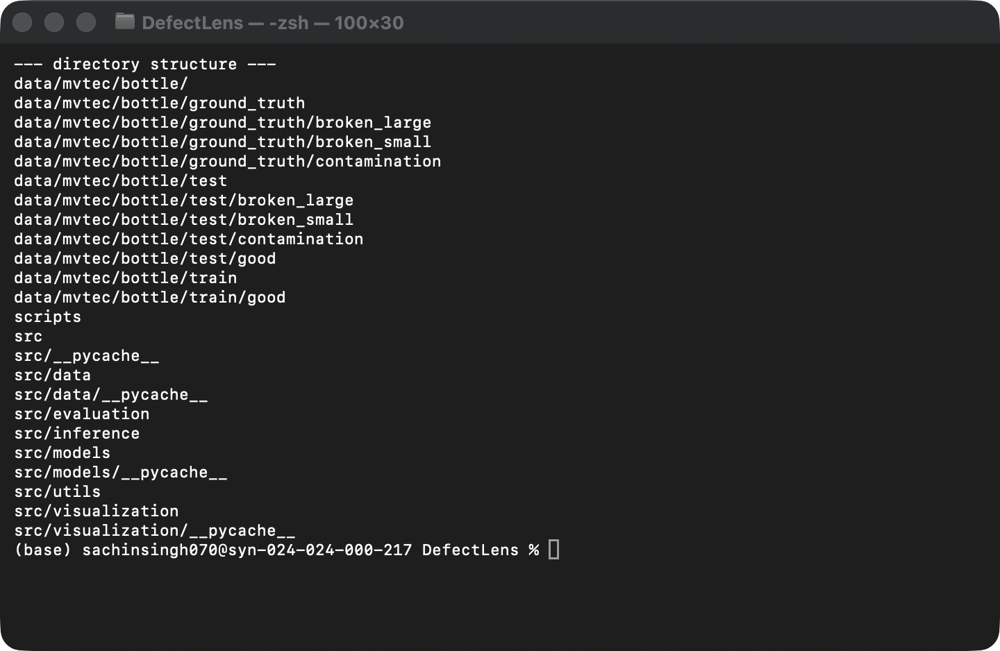
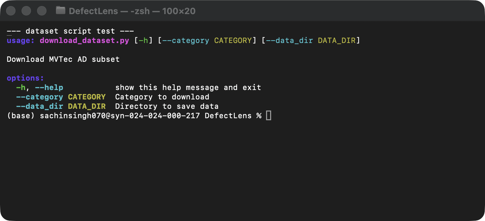
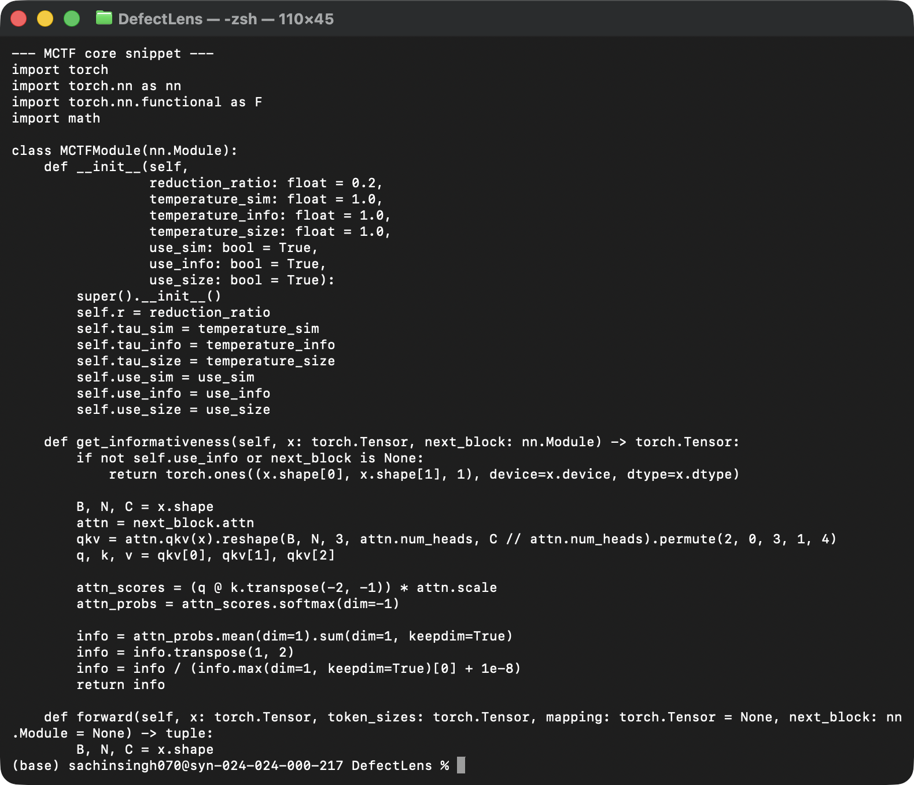

Project Title: DefectLens: Efficient ViT-Based Anomaly Detection with Multi-Criteria Token Fusion (MCTF)
Team Number: Team 7
Team Members:
In modern manufacturing, industrial visual inspection is critical for ensuring product quality. Identifying subtle defects manually is error-prone and time-consuming. The DefectLens project addresses this by implementing an industrial visual anomaly detection system. It is designed to identify defects (e.g., scratches, contaminations, structural damage) by learning the visual distribution of "normal" fault-free products, since collecting training data for every possible defect type is practically impossible.
The proposed system employs a Vision Transformer (ViT) backbone integrated with a PatchCore-style memory bank. To resolve the massive computational overhead of standard ViTs on high-resolution industrial images, we propose a Multi-Criteria Token Fusion (MCTF) module. MCTF dynamically fuses redundant background patches while protecting critical fine-grained features, drastically reducing inference latency and FLOPs without sacrificing detection accuracy.
Task 4 Part 1 Focus: This initial implementation phase focuses strictly on the foundational infrastructure: automated dataset acquisition, data preprocessing/loading pipelines, and the structural initialization of the core ViT and MCTF modules. The full scoring logic and evaluation remain for subsequent phases.
The complete proposed pipeline operates as follows:
Dataset → Data Preprocessing → [ViT Feature Extraction] → [MCTF Token Reduction] → [FAISS Memory Bank Matching] → [Final Output/Evaluation]
The system utilizes the widely recognized MVTec AD dataset, the standard benchmark for industrial anomaly detection. We have implemented automated scripts to acquire subsets (e.g., the 'bottle' category) to facilitate rapid development and testing.
Actual project structure and dataset organization:
project/
├── data/
│ └── mvtec/
│ └── bottle/
│ ├── train/
│ │ └── good/
│ ├── test/
│ │ ├── broken_large/
│ │ ├── broken_small/
│ │ ├── contamination/
│ │ └── good/
│ └── ground_truth/
├── src/
│ ├── data/
│ │ └── dataset.py
│ └── models/
│ ├── mctf.py
│ └── vit.py
└── scripts/
└── download_dataset.py

src/) and scripting (scripts/) directories used in our implementation.The dataset is managed using automated Python scripts and custom PyTorch DataLoaders.
Code Snippet 1 – Automated Dataset Downloading (scripts/download_dataset.py)
import urllib.request
import tarfile
def download_and_extract(url, save_path, extract_path):
print(f"Downloading from {url}...")
urllib.request.urlretrieve(url, save_path)
print(f"Extracting {save_path}...")
with tarfile.open(save_path) as tar:
tar.extractall(path=extract_path)
os.remove(save_path)
return True
Purpose → How it works → Expected output: This script automates the retrieval of MVTec AD dataset subsets from remote servers. It uses urllib to fetch tarballs and tarfile to extract them directly into the data/mvtec/ directory. This ensures the team has a reproducible data pipeline without manual downloading.

Code Snippet 2 – Dataset Loader (src/data/dataset.py)
class MVTecDataset(Dataset):
def __init__(self, root: str, category: str, is_train: bool = True, transform=None):
self.dataset_path = os.path.join(root, category)
self.is_train = is_train
self.transform = transform
self.img_paths = []
self.labels = [] # 0 for normal, 1 for anomaly
if is_train:
train_dir = os.path.join(self.dataset_path, "train", "good")
for img_name in sorted(os.listdir(train_dir)):
self.img_paths.append(os.path.join(train_dir, img_name))
self.labels.append(0)
else:
# Code to load test directories (good + defect categories)
pass
def __getitem__(self, idx):
img_path = self.img_paths[idx]
img = Image.open(img_path).convert('RGB')
if self.transform is not None:
img = self.transform(img)
return {'image': img, 'label': self.labels[idx]}
Purpose → How it works → Expected output: We extend PyTorch's Dataset class to map the complex MVTec AD folder structure into an iterable format. It automatically assigns label 0 to "good" images and 1 to defective ones, loading RGB images dynamically to conserve memory.
Vision Transformers expect standardized, normalized input tensors. Our preprocessing pipeline targets resizing and normalization.
Code Snippet 3 – Preprocessing Transforms (src/data/dataset.py)
import torchvision.transforms as T
def get_transforms(img_size: int = 224):
transform = T.Compose([
T.Resize((img_size, img_size), interpolation=T.InterpolationMode.BICUBIC),
T.ToTensor(),
T.Normalize(mean=[0.485, 0.456, 0.406], std=[0.229, 0.224, 0.225])
])
return transform, None
BICUBIC interpolation to preserve edge details which are critical for anomaly detection.[0.485, 0.456, 0.406] and standard deviations. This aligns the input distribution with the data our pre-trained ViT backbone expects, accelerating convergence.Observed Result: The output is a highly standardized [3, 224, 224] float tensor ready for patch embedding.
[SCREENSHOT REQUIRED: Jupyter Notebook / Python script output showing a raw image alongside its normalized, resized tensor representation.]
For Task 4 – Part 1, the implementation is limited to approximately 25% of the complete proposed methodology. We have successfully implemented the data pipelines and the core logic for the Multi-Criteria Token Fusion (MCTF) module.
[Batch, Num_Tokens, Channels].src/models/mctf.py).Code Snippet 4 – MCTF Core Logic (src/models/mctf.py)
class MCTFModule(nn.Module):
def __init__(self, reduction_ratio: float = 0.2, use_sim=True, use_info=True, use_size=True):
super().__init__()
self.r = reduction_ratio
self.use_sim = use_sim
self.use_info = use_info
self.use_size = use_size
def get_informativeness(self, x: torch.Tensor, next_block: nn.Module) -> torch.Tensor:
# Uses one-step-ahead attention to protect highly attended tokens
attn = next_block.attn
qkv = attn.qkv(x).reshape(...)
# ... attention score computation ...
return info
def forward(self, x, token_sizes, mapping=None, next_block=None):
# Bipartite matching logic separating tokens into sets A and B
# ...
if self.use_sim:
# Cosine similarity calculation
if self.use_info:
# Informativeness weighting
if self.use_size:
# Penalty for already large (highly fused) tokens
# Output fused tokens
return final_out, final_sizes, final_mapping
Execution & Interpretation: This code acts as a drop-in replacement/addition inside standard ViT blocks. When a batch of patch tokens passes through, MCTFModule scores them. Redundant background tokens get merged together, meaning subsequent ViT layers process significantly fewer tokens. This directly implements our core proposal for efficiency.

| Component | Status | Evidence |
|---|---|---|
| Dataset Collection | Completed | Automated download script (download_dataset.py) |
| Dataset Loading | Completed | PyTorch DataLoader implemented (dataset.py) |
| Preprocessing | Completed | Torchvision transforms pipeline active |
| MCTF Module Logic | Completed | PyTorch nn.Module implemented (mctf.py) |
| ViT Integration | Partial | Base structure present, full forward pass wiring ongoing |
| Memory Bank (FAISS) | Not started | Planned for next phase |
| Final Anomaly Scoring | Not implemented yet | Planned for next phase |
To successfully complete the DefectLens system, the following ~75% of the methodology remains:
self.r).| Stage | Task 4 Part 1 | Future Work |
|---|---|---|
| Dataset | Completed subset downloading | Download full MVTec AD dataset |
| Preprocessing | Completed basic transforms | Mask processing for ground truth |
| Methodology | ~25% implemented (MCTF Core) | Remaining ~75% (ViT integration, FAISS) |
| Evaluation | Not yet implemented | Full AUROC and Latency evaluation |
| Final System | Not yet completed | React Frontend & FastAPI Backend integration |
During this initial phase, several challenges were identified and addressed:
dataset.py.mapping tensor across all layers. Our PyTorch implementation currently addresses this via an old_to_new tensor mapping logic, though it adds slight computational overhead.For Task 4 – Implementation Part 1, Team 7 has successfully established the foundational infrastructure for the DefectLens project. The automated dataset acquisition pipeline is fully functional, capable of retrieving and organizing the MVTec AD dataset. The data preprocessing and loading modules have been implemented using PyTorch, ensuring that high-resolution industrial images are appropriately resized, normalized, and converted into tensors.
Crucially, approximately 25% of our proposed methodology has been coded, specifically the core logic for the Multi-Criteria Token Fusion (MCTF) module. The system is now capable of computing bipartite soft-matching across tokens based on similarity, informativeness, and size.
The current implementation represents a functional data and structural pipeline. The remaining stages, including FAISS memory bank integration, anomaly distance scoring, and final UI deployment, will be completed in the upcoming phases.